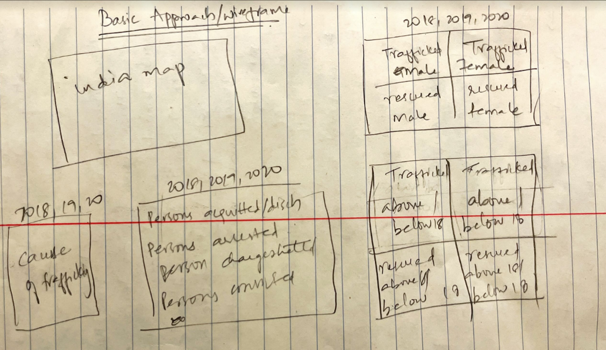
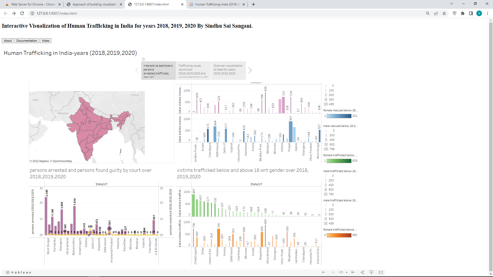
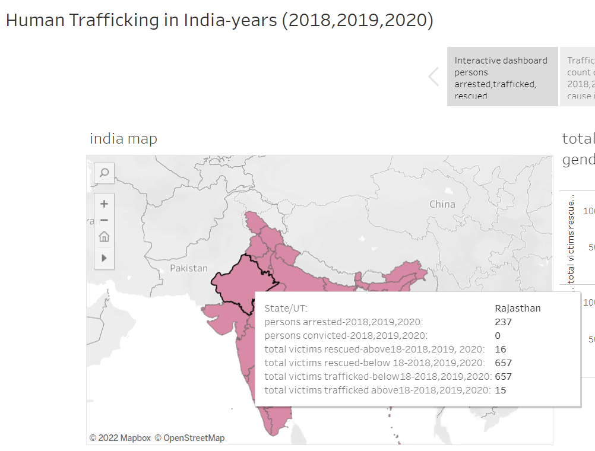
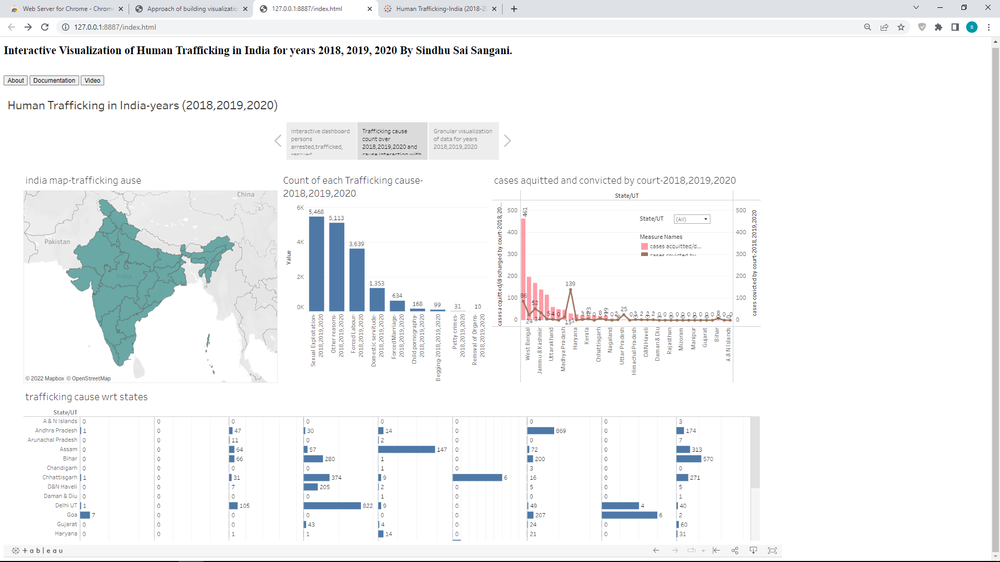
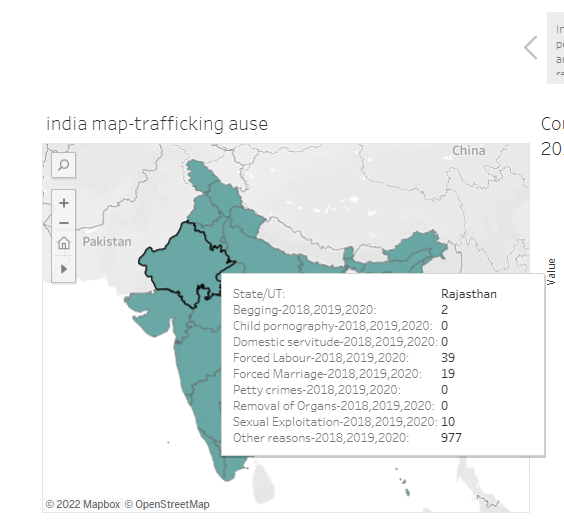
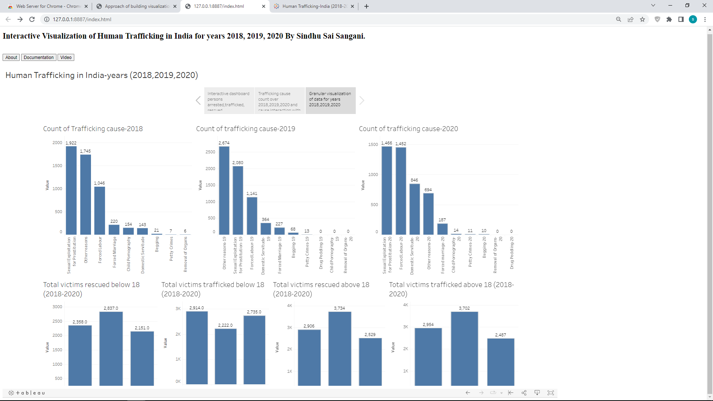
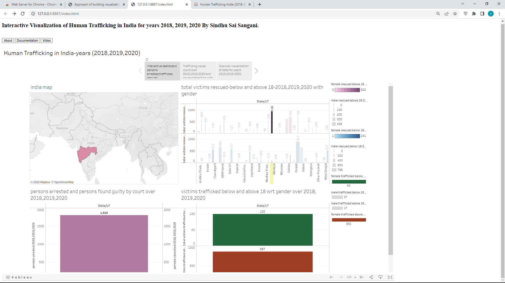
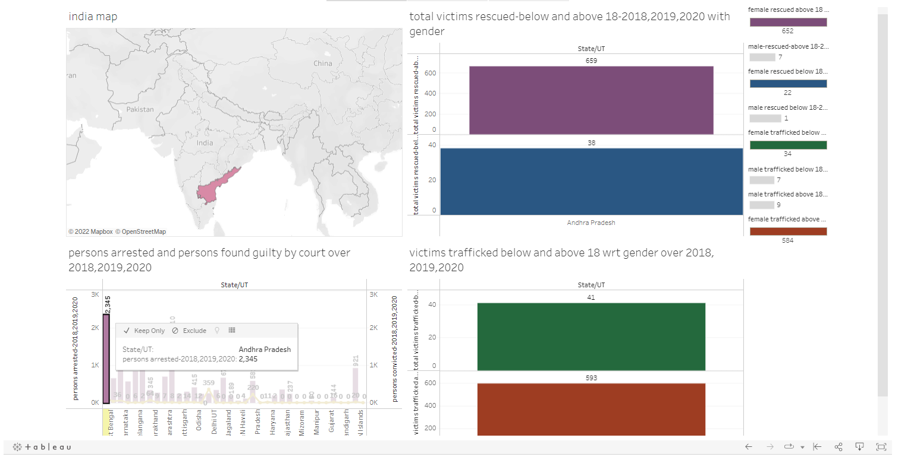
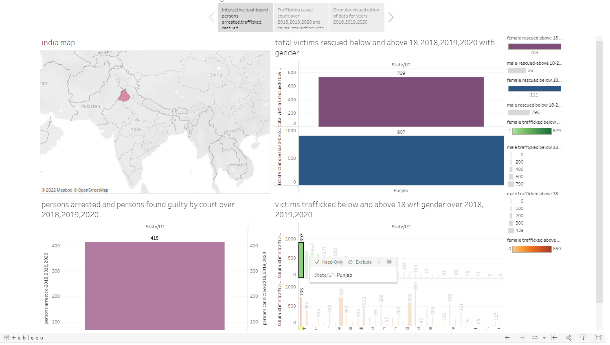

This is an individual project completely contributed and built by myself.
About the dataset
The dataset is taken from kaggle and contains about total number of human trafficking cases reported per State/Union Territories in India,
number of victims trafficked/rescued, nationality of the victims, age-group, purpose of trafficking, police and court disposal of cases,
and number of culprits arrested/acquitted. The data is provided for all 29 states and 7 Union Territories of India.
So coming to data, the datset contains 22 files which described and provided information of all the above mentioned attributes for years
2018, 2019, 2020. In order to make data more granular and eligible for visualizations, I have fused the data of all the years together into one
final dataset that pretty much helped me in building visualizations in later stages.
Note about the data: As the 22 files denoted data wrt years and there was no specific column for years in dataset, I had to build visualizations
according to this.
My design process

About the calculated fields I've done in tableau prior to building visualizations
I have done calculations to get consolidated numerics for victims rescued or trafficked for ages below 18 and above 18, for genders for years 2018-2020
combinedly, also calculated the over all trafficking cause respectively for years 2018-2020 respectively, cases convicted and chargesheeted by court,
persons arrested and acquitted for years 2018-2020 combined. All these took me couple of days to go over, understand the data, how to build visualizations
in such a way so that I have the calculated fields done ready by me.
About my visualizations
I had built a tableau story to tell the world what the dataset was trying to convey. It has 3 dashboards in it. In this documentation, I would
go through this story to denote the facts from the data.
First Dashboard: Interactive Dashboard with people arrested, trafficked and rescued for years 2018-2020 combined

The visualization has 4 parts. The first one is India map which contains the other three parts data on that. So the other graphs are used as filters
w.r.t to map and the interactive visualizations are built. The zoom in/out and panning details are added to the map.

The second part is total victims rescued from 2018-2020 w.r.t gender, states/union Territories for age groups below 18 and above 18. There are two bar graphs in it and the
first one is total victims rescued above 18 (pink color scale represents females rescued with darker shade being the highest number and lighter shade lowest
and size scale of width of the bar represents males rescued with larger width bar size giving out more males rescued and smaller widthe less number of males rescued).
BLue shade representing females rescuedd below 18 and the size of bar represents male as above.
The third part is the total persons arrested and found guilty by court from 2018-2020 w.r.t to states/union Territories.
The fourth one is total victims trafficked w.r.t to states/union Territories, gender and age groups (below and above 18). The green color in the
graph represents the females trafficked with age group of below 18 (darkest shade being highest number and ligher shade for lowerst count)
and size of width of bar represents the males trafficked (with thickest bar representing highest count of males and thinest bar represent lowest
count of males). The orange represents female trafficked for above 18 age group (with darkest shade being highest count) and the size for male as above.
Second Dashboard: Count of traffickingcause for years 2018-2020 combined and cases acquitted and convicted by te court for 2018-2020
w.r.t states/union territories.

This visualization dashboard contains 4 parts. The first one is India map which reflects the interaction w.r.t third and fourth parts/graphs.

The second graph is just an granular information of count of trafficking causes combined for years 2018-2020 to show which is the most
common cause for the trafficking.
The third graph shows cases acquitted and convicted by court for 2018-2020 combined w.r.t states/UT.
The fourth and bottom graph represents trafficking causes count w.r.t to states/UT for 2018-2020 combined.
Third Dashboard: Granular visualizations of teh dataset to cover up more inclusive and miscellaneous information of the dataset

This dashboard contains 7 graphs all independent and divided for each year(2018, 2019, 2020) separately. First one is count of trafficking cause
for only year 2018.
Second graph is count of trafficking causes for only year 2019.
Third graph is for count of trafficking causes for only year 2020.
Fourth graph shows count of total victims rescued only for below 18 for years 2018, 2019, 2020 separately.
Fifth graph represents count of total victims trafficked only for below 18 for years 2018, 2019, 2020 separately.
Sixth graph represents count of total victims rescued only for above 18 for years 2018, 2019, 2020 separately.
Seventh graph represents count of total victims trafficked only for above 18 for years 2018, 2019, 2020 separately.
Go-through of my visualizations
Going back to first dashboard, when I click on victims rescued on above 18 for state Maharastra, we can see that this is the stated which contains
highest rescued count for female over the states/UT. We can also observe that information on other graph also reflects w.r.t that stae while clickin
on one graph. This helps to gather information for various attributes involved in dataset for a particular state. So all this precalculated information
was done by me in tableau to get the consolidated figures for visualizations.
For second dashboard, firstly we see from second graph here that Sexual Exploitation was the main cause for the trafficking as it sums to be 5468
and removal orans to be the lowest with sum of 10.
Note: sum of trafficking cause for eac year is separately visualized in third dashboard.
We see from third graph that Andhra pradesh has the highest number of cases acquitted/discharged by court for years 2018-2020 combined and Jharkand
has the highest number of cases convicted by the court.
From bottom graph of second dashboard, we see the visualization is giving information of su of trafficking cause but for each state/UT for years 2018-2020 combined.
We can deduce many numerics from this graph for states. For exaple, few of them are that Maharastra has highest count for sexual exploitation
for Assam state specifically, forced marriages are one of the main reasons or for Punjab we see domestic servitude as main cause and so on.
Again the interaction appears w.r.t states with other one being the other graphs as variables and acheiving interaction.
Again all of these graphs are built after having very formulated fields in tableau before bringing on these visualizations.
For third dashboard we get the minute details which the datset would like to convey. The graphs show that Sexual exploitation was the major cause
for trafficking for years 2018 and 2020 whereas Other reasons (which the dataset did not specifically mentioned what others were) is major cause
for 2019. We also see that for 2020, Sexual exploitation and foced labour seems to be major causes with the first being highest. Removal of
Organs pretty much seems to be constantly least cause for trafficking in these three years.
The bottom 4 graphs shows that highest number of victims for age group below 18 were rescued in 2019, and also highest number of victims for age group
below 18 was also trafficked in 2019.It is also same for victims rescued and trafficked for age groups above 18 and below 18. We can conclude that many
cases did take place in 2019.
Questions asked:
How many accused are arrested over 2018-2020 on the India map?
The below left graph from first dashboard (Interactive Dashboard Persons arrested, trafficked rescued) answers this question.
What is the rescued victims over gender, age group over the years 2018-2020 for states/UT?
The top right graph from first Dashboard (Interactive Dashboard Persons arrested, trafficked rescued) answers this question.
What is the trafficked victims over gender, age group over the years 2018-2020 for states/UT?
The bottom right graph from first Dashboard (name of dashboard: Interactive Dashboard Persons arrested, trafficked rescued) answers this question.
Which state has whick kind of recurrently occured trafficking cause/purpose over the years 2018-2020?
The second dashboard (name of dashboard: Trafficking cause count over 2018,2019,2020) answers many of the minute observations on trafficking cause.
What is total of cases acquitted and convicted by court from 2018-2020 for states/UT?
The third graph from top row of second dashboard(name of dashboard: Trafficking cause count over 2018,2019,2020) answers this question.
What is individual total of trafficking cause for each year, which has highest and lowest count for each year individually?
The third dashboard(name of dashboard: Granular visualization of data) answers this question.
What is individual count of victims rescued and trafficked for ages below and above 18 separately for each year so that we could compare them?
The third dashboard(name of dashboard: Granular visualization of data) answers this question.
Few interaction pictures
For Maharastra, rescued, above 18 for 2018-2020

Interaction for Andra Pradesh, persons arrested and found guilty

Females trafficked for below 18 w.r.t gender for years 2018-2020

Interaction for Cases convicted in Jharkand for 2018-2020